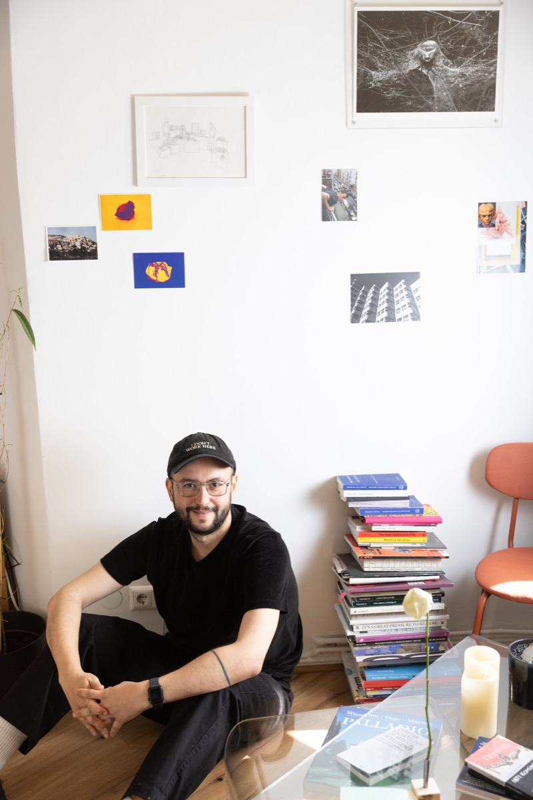

Yelta Köm is an artist working through spatial practices, trained as an architect and based in Berlin. His work moves between counter-mapping, critical cartography, installation and research, much of it on water and territory along the Tigris.

He studied architecture at Yıldız Technical University in Istanbul and in the Architecture Class of the Städelschule in Frankfurt am Main. His work combines counter-mapping, critical cartography, installation, video and research, with a long engagement with water, displacement and territory along the Tigris, including work with Arazi Assembly alongside people from villages flooded by the Ilısu Dam.
He co-founded the collective Herkes İçin Mimarlık / Architecture for All in 2011, was associate curator of Vardiya / The Shift, the Pavilion of Türkiye at the 16th International Architecture Exhibition of La Biennale di Venezia (2018), and worked as a researcher on the ERC project Topological Atlas / Border Topologies (TU Delft and Goldsmiths) from 2019 to 2022. He chairs the board of TOP e.V., which runs TOP Project Space in Berlin.
Represented by Versus Art Project, Istanbul
Exhibition design and scenography: Studio No Frame ↗
Exhibitions 24
- 2025Open Studios Tempelhof, TOP e.V., TOP Project Space / Zebrahaus, Berlin
- 2024Ecologies of Making Worlds, Akademie der bildenden Künste Wien, Vienna
- 2024Sound Kitchen: Nightlife as Sustained Resistance, Kulturakademie Tarabya, Istanbul
- 2023vorspiel transmediale, transmediale, Silent Green, Berlin
- 2023Non-Extractivist Practices in the Dispossessed Lands, TOP e.V., TOP Project Space, Berlin
- 2023all familiar, all foreign (her şey tanıdık, her şey yabancı), Versus Art Project, Istanbul
- 2022Coexist, Coact, Collaborate, UMPRUM, Academy of Arts, Architecture and Design in Prague, Galerie UM, Prague
- 2022Undertow (Dip Dalga), Versus Art Project, Online
- 2022Urban Surveillance Bureau: A Sequence of Work in Process, vorspiel transmediale, TOP e.V., Berlin
- 2021Listening to Listening, TOP e.V., Berlin
- 2021GEMSS'21: Emerging Architects Selection and Exhibition, The Circle, Istanbul
- 2021On being water, Istanbul
- 2020Scale (Ölçek), Versus Art Project, Istanbul
- 2019Dreams to Realities, Istanbul Modern / VitrA, Istanbul
- 2019I-DEA, Archive of Archives: A Voyage Through the Collections of Basilicata, Matera European Capital of Culture 2019, Matera
- 2018Vardiya / The Shift, İKSV, Pavilion of Türkiye, 16th International Architecture Exhibition, La Biennale di Venezia, Arsenale, Venice
- 2016Terk Etmeyeceğiz / We Won't Leave, Goethe-Institut Ankara, Ankara
- 2016Les Glaneurs et Les Glaneuses (The Gleaners), Versus Art Project, Istanbul
- 2015Dikkat! Kaygan Zemin / Caution! Slippery Ground, Istanbul Modern, VitrA Contemporary Architecture Series, TSMD, Istanbul
- 2015Incremental Housing, 3rd Antalya International Architecture Biennial, Antalya
- 2014TwtRate, Galata Greek Primary School, Istanbul
- 2013–2014KONTRAAKT, Istanbul
- 2012Söz and Bomba (Musibet), Herkes İçin Mimarlık / Architecture for All, Istanbul Modern, Istanbul
- 2012Ad-Hoc Library, Galata Greek Primary School, Istanbul
Works 26
- 2026Yarıktan Sızanlar / What Seeps Through the Crack
- 2026Dicle Batman Çayı Üzerine Fragmanlar / Fragments on the Dicle Batman Stream, ÇAND, Amed (Diyarbakır)
- 2026hep seninleydim / I was always with you, SALT, Beyoğlu, Istanbul
- 2025Cracks in the Soil, Kunstmuseum Moritzburg Halle (Saale) and Werkleitz, Halle (Saale)
- 2024Sen de mi buradasın? / Are You Here Too?, Istanbul Modern, Istanbul
- 2023–2024Nightlife as Sustained Resistance in Istanbul, Kulturakademie Tarabya, Allianz Foundation, Istanbul
- 2023–ongoingLines of Displacement: Along the Tigris, Against Catastrophe
- 2023I'm not good at catchy one-liners, but who can say no to a laser proposal?
- 2023Kıyamet / Eschatology
- 2022–2023Yellow Pages, Research Institute, Berlin International University of Applied Sciences, Berlin
- 2022State of Displacement: Entangled Topographies, 17th Istanbul Biennial, Müze Gazhane, Istanbul
- 2021Eyes on Eyes
- 2021–ongoingit is an elegy for all possibilities, Studio No Frame, Kerpe
- 2021Possibilistic Grounds (Olasılıksal Zeminler), Versus Art Project, Istanbul
- 2020Hide & Seek (Latent Surveillance Map), Forecast Platform, Radialsystem, Berlin
- 2020Fateful Serendipity
- 2019Do you care about the air?, SKuOR, TU Wien, Vienna
- 2019–2022Hasankeyf (35 mm photographs), Hasankeyf
- 2019Secret Ingredient, 3rd Chicago Architecture Biennial, Anthony Overton Elementary School, Chicago
- 2018The Venice Times, İKSV, Pavilion of Türkiye, 16th Venice Architecture Biennale, Venice
- 2017State of Territory, Goethe-Institut Athen, Athens
- 2016–ongoingUrban Blockade Atlas
- 2015De-Coding Amsterdam, Städelschule Architecture Class, Frankfurt am Main
- 2014Recronomic Landscapes, Istanbul
- 2013–2015#occupygezi architecture, Herkes İçin Mimarlık / Architecture for All, Istanbul
- 2012Active Monument to Urban Destruction, Karaköy, Istanbul
Texts and publications 108
- 2026Gediz Delta: cultural research paper, Salt of the Earth (COP31 Türkiye salt marsh project)
- 2026Holding Disagreement: Notes on Commoning on Contested Ground, School of Commons, ISSUES 2026
- 2025Scroope 34, Cambridge Journal of Architecture, Cambridge Journal of Architecture, University of Cambridge
- 2025Planetarische Bauern / Planetary Peasants (contribution), MMKoehn Verlag, Halle (Saale)
- 2025Kapıların Eşiğinde Bir Adalet Arayışı / A Search for Justice on the Threshold of Doors, Argonotlar
- 2024Kurmacalar, Şiirler, Gelecek ve Kurşun Dökmek / Fictions, Poems, the Future and Pouring Lead, Argonotlar
- 2024Gülsün Karamustafa'nın Sanatında Biriken / What Accumulates in Gülsün Karamustafa's Art, Manifold
- 2024Berlin Notları #38: Nefesle Dans, Güneşli Ama Soğuk / Berlin Notes #38: Dancing with the Breath, Sunny but Cold, Manifold
- 2024Berlin Notları #37: Şifaya Giden Dert Yolları / Berlin Notes #37: Roads of Trouble Leading to Healing, Manifold
- 2024Berlin Notları #36: Hayalet Müdavim / Berlin Notes #36: The Ghost Regular, Manifold
- 2024Berlin Notları #35: Veda / Berlin Notes #35: Farewell, Manifold
- 2023Bir Gecenin Anatomisi / Anatomy of a Night, Manifold
- 2023Berlin Notları #32: Unutmak ve Unutulmak / Berlin Notes #32: To Forget and to Be Forgotten, Manifold, Berlin
- 2023Inaccurate topographies of territorial states, Urgent Pedagogies, Issue #7 Entangled Topographies, Online
- 2023–2024Bir Gecenin Anatomisi: Karanlıkta Yeniden Doğan Mekânlar / Anatomy of a Night: Spaces Reborn in the Dark, Manifold
- 2023Berlin Notları #34: Radiye / Berlin Notes #34: Radiye, Manifold
- 2023Berlin Notları #33: Zaman Zaman / Berlin Notes #33: From Time to Time, Manifold
- 2022Iklim Krizi ve Mimari (ArtDog Istanbul web publication), ArtDog Istanbul
- 2022Berlin Notları #30: Yaz Raporu / Berlin Notes #30: Summer Report, Manifold, Berlin
- 2022Berlin Notları #28: tut mir manchmal weh / Berlin Notes #28: tut mir manchmal weh, Manifold, Berlin
- 2022Berlin Notları #31: 2022 Wrapped: Zaman Her Şeyi Siliyor / Berlin Notes #31: 2022 Wrapped: Time Erases Everything, Manifold
- 2022Berlin Notları #29: Tesadüfler / Berlin Notes #29: Coincidences, Manifold
- 2022On Yıl Sonra Tekrar Sormak Üzere: Mimarlık Herkes İçin Olabilir mi? / To Ask Again After Ten Years: Can Architecture Be for Everyone?, Manifold
- 2021Berlin Notları #27: Aradığınız Kişiye Ulaşılamıyor / Berlin Notes #27: The Person You Have Called Is Unreachable, Manifold, Berlin
- 2021Berlin Notları #26: Gecenin İçine Sızan Işıklar / Berlin Notes #26: Lights Seeping into the Night, Manifold, Berlin
- 2021Berlin Notları #25: Kırmızı Işıklar ve Dolanan Yollar / Berlin Notes #25: Red Lights and Winding Roads, Manifold, Berlin
- 2021Mimarın Galaksi Rehberi / The Architect's Guide to the Galaxy, Academia
- 2021Mimarlık Pratiğinin Dönüşümü ve Pandemi / The Transformation of Architectural Practice and the Pandemic, TMMOB Mimarlar Odası Ankara Şubesi, Ankara
- 2021Hakikat Arası / Between Truths
- 2021Cohabitation: A Manifesto for the Solidarity of Non-Humans and Humans in Urban Space, YILLIK: Annual of Istanbul Studies, vol. 3, Istanbul Research Institute
- 2021Berlin Notları #24: Sorumluluk? / Berlin Notes #24: Responsibility?, Manifold
- 2021Berlin Notları #23 / Berlin Notes #23, Manifold
- 2020Algoritmanın Gözleri (interview with Ege Özgirin) / The Eyes of the Algorithm (interview with Ege Özgirin), Manifold
- 2020Nefes Noktaları #1 / Breathing Points #1, Medium
- 2020Gündeliğin Ferahlığı / The Ease of the Everyday, Manifold
- 2020Berlin Notları #22: Kafa Karışıklığı ve Toz Zerreleri / Berlin Notes #22: Confusion and Dust Particles, Manifold
- 2020Berlin Notları #19 / Berlin Notes #19, Manifold
- 2020Berlin Notları #17: Pencereden Notlar / Berlin Notes #17: Notes from the Window, Manifold
- 2020Berlin Notları #16: Yataklar / Berlin Notes #16: Mattresses, Manifold
- 2020Berlin Notları #21: Bizi Birbirimize Ne Bağlar? / Berlin Notes #21: What Binds Us to One Another?, Manifold
- 2020Berlin Notları #20: Dijitalleşen Kent / Berlin Notes #20: The Digitalizing City, Manifold
- 2020Evdeyiz #7 Yelta Köm Öneriyor: Dijital Eğitim Platformları / Evdeyiz #7 Yelta Köm Recommends: Digital Education Platforms, Evdeyiz series
- 2020Berlin Notları #18: Ateş, Kül, Toprak / Berlin Notes #18: Fire, Ash, Earth, Manifold
- 2019Yeniyi Ararken Yok Etmemek Mümkün mü? / Is It Possible Not to Destroy While Searching for the New?, Vbenzeri
- 2019Yaşasın Studio-X! / Long Live Studio-X!, Manifold
- 2019Uykusuz Uykular, Manifold
- 2019Mimarlığın Püf Noktası? / The Trick of Architecture?, Manifold
- 2019İşgal İşleri Başkanlığı / Department of Occupation Affairs, Manifold
- 2019Hey Gidi Koca Dünya / Oh, You Great Big World, Manifold
- 2019Bildiğimiz İnternetin Sonu mu Geldi? / Has the End of the Internet as We Know It Arrived?, Manifold
- 2019Berlin Notları #15: Übergestern / Berlin Notes #15: Übergestern, Manifold
- 2019Berlin Notları #14 / Berlin Notes #14, Manifold
- 2019Berlin Notları #13 / Berlin Notes #13, Manifold
- 2019Arredamento Mimarlık Nisan Sayısı / Arredamento Mimarlık April Issue, Arredamento Mimarlık
- 2018Bırakın Kettle Kaynasın / Let the Kettle Boil, Manifold
- 2018Vardiya (The Shift), four-volume set
- 2018–2023A Road to Home: Following the concrete, Urgent Pedagogies, Issue #7 Entangled Topographies (IASPIS), Southeast region of Turkey
- 2018Yaz Bitti, Manifold
- 2018Yarın Daha İyi mi Olacak? / Will Tomorrow Be Better?, Manifold
- 2018Vardiya'ya Hoş Geldiniz! / Welcome to Vardiya!, Manifold
- 2018Senin Puanın Kaç? / What Is Your Score?, Manifold; Medium (English version, 2019)
- 2018Seeds of Awareness, XXI Architecture and Design Magazine
- 2018Nereye Gitti Dijital Bedenin?, Manifold
- 2018Vardiya: 16. Uluslararası Mimarlık Sergisi Venedik Bienali Türkiye Pavyonu (Fikir, Açık Çağrı, Söyleşi, Pavyon), İKSV / Yapı Kredi Yayınları and Mousse Publishing
- 2018Konum Atsana!, Manifold
- 2018Selfie'den Sonra / After the Selfie, Manifold
- 2017Katılımcı Sergi Projesinde Mimarın Kafa Karışıklığı / The Architect's Confusion in a Participatory Exhibition Project, Manifold
- 2017Berlin Notları #12: Final / Berlin Notes #12: Finale, Manifold
- 2017Berlin Notları #11: Boncuk / Berlin Notes #11: Bead, Manifold
- 2017Berlin Notları #10: O Ev Berlin! / Berlin Notes #10: That Home Is Berlin!, Manifold
- 2017Berlin Notları #8 / Berlin Notes #8, Manifold
- 2017Berlin Notları #7: Kendime Notlar / Berlin Notes #7: Notes to Myself, Manifold
- 2017Berlin Notları #6 / Berlin Notes #6, Manifold
- 2017Berlin Notları #5 / Berlin Notes #5, Manifold
- 2017Berlin Notları #2 / Berlin Notes #2, Manifold
- 2017Berlin Notları #9: Hong Kong / Berlin Notes #9: Hong Kong, Manifold
- 2017Berlin Notları #4 / Berlin Notes #4, Manifold
- 2017Berlin Notları #3 / Berlin Notes #3, Manifold
- 2016Recoded City: Co-Creating Urban Futures (contribution), Routledge
- 2016Autonomous Archiving (book), dpr-barcelona
- 2016Arkitera Seyahat Bursu alumni texts, published as one interview, Arkitera
- 2016Ticareti Olmayan Ama Ekonomisi Olan Bir Mimarlık Var / There Is an Architecture Without Trade but With an Economy, Mimarlar Odası Dergisi
- 2016Kısa bir radyo hikayesi / A Short Radio Story, Medium
- 2016Bienalin Değerli Artıkları / The Valuable Residues of the Biennale, Mimarlık, TMMOB Mimarlar Odası
- 2016Berlin Notları #1 / Berlin Notes #1, Manifold
- 2015Neden Medium'da yazmaya karar verdim? / Why I decided to write on Medium, Medium
- 2015Uğur Tanyeli interview, part 1 (Dikkat! Kaygan Zemin blog), Dikkat! Kaygan Zemin blog (Vitra Çağdaş Mimarlık Dizisi)
- 2015Dikkat! Kaygan Zemin: blog and texts programme (Vitra Contemporary Architecture Series), Vitra Çağdaş Mimarlık Dizisi (exhibition Dikkat! Kaygan Zemin), Istanbul; exhibition travelling to Ankara in Nov 2015
- 2015Bugün neyi putlaştırdınız? / What Did You Idolise Today?, Istanbul Art News, Istanbul
- 2015Mimarlık hakkında yazarım diyordum… / I Used to Say I Would Write About Architecture…, Medium
- 2015Kişisel bir blog serüveni / A Personal Blogging Adventure, Medium
- 2015Interrogation of Commoning Practices in Architectural Design and City, Städelschule Architecture Class, Frankfurt am Main
- 2015Bir kaldırım hikayesi / A Pavement Story, Medium
- 2015Plankton Project: Merkez dışı mimarlıklar / Plankton Project: Off-Centre Architectures, Istanbul Art News
- 2015Betonart, present+ issue, Betonart
- 2014Yaparak Öğrenmek, Üretimi Müşterek Etmek / Learning by Doing, Making Production Common, Istanbul Art News, Istanbul
- 2014Tweet atmak zorunda mıyım? / Do I Have to Tweet?, Arredamento Mimarlık
- 2014Mimarlık herkes için olabilir mi? / Can Architecture Be for Everyone?, Istanbul Art News, Istanbul
- 2014–2015Istanbul Art News column (IAN.Mimar), Istanbul Art News, Istanbul
- 2014Akşam yediğiniz yemek ile mimarlık yapmanızın nasıl bir ilgisi olabilir? / What Could the Dinner You Eat in the Evening Have to Do With Your Practising Architecture?, Istanbul Art News, Istanbul
- 2014Mimarlık Nasıl Çözülür? Mimarlar Nasıl Düşünür? / How Is Architecture Solved? How Do Architects Think?, Istanbul Art News (IAN.Mimari)
- 2014Dear Istanbul, We Need to Talk (Querido Estambul, Tenemos Que Hablar), Revista Arquine, No. 67, Mexico
- 2014A Spatial Narrative of the Perpetual Reconquista (What's Happening in Taksim), Urbane Interventionen Istanbul: Learning from Gezi?, Merve Verlag, Berlin
- 2014Cam Kutularda Mimarlık Yetiştirmek (Growing Architectures in Glass Boxes), Arredamento Mimarlık
- 20132. Uluslararası Antalya Mimarlık Bienali Üzerine... / On the 2nd International Antalya Architecture Biennial..., Arredamento Mimarlık, Istanbul
- 2010Collaborative Design and Live Interaction with Parametric Models Using UbiMash, International Journal of Architectural Computing (IJAC), vol. 8, no. 3, Barcelona
- 2009Resurrection Spaces in Architectural Education: 'Kayıtdışı' Experience
- 2009Mimarlık Eğitiminde Nefes Noktaları: kayıt dışı deneyim / Breathing Points in Architectural Education: the Kayıtdışı Experience, Mimarist
Talks 65
- 2026Spatial Narratives of Commoning: conversation with Imaginary Famagusta, School of Commons and TOP e.V., Online
- 2026Beneath the Image: Tigris Valley and the Visual Politics of Submersion, MESAAS Graduate Conference, Columbia University, Online (Columbia University, New York)
- 2026Artist talk, Breaking Through a Dam, SALT Beyoğlu, Istanbul
- 2026FUSION: METHOD, Tracing/Investigating Space, Universität Kassel, FB 06, Kassel
- 2026Stilling the Flow: Visual Regimes of Water Infrastructure in the Tigris Basin, Relational Ecologies, International Conference on Cultural Studies, Batman University, Batman
- 2026Screening and artist talk: Üzüm Derin Solak, How Do You See Me?, Spore Initiative, Berlin
- 2026Forecast Festival: guided walk-throughs, Forecast, Radialsystem, Berlin
- 2026I was always with you (talk), SALT, Beyoğlu, Istanbul
- 2025Guest lecture, Hochschule für Bildende Künste Braunschweig, Hochschule für Bildende Künste Braunschweig, Online
- 2025Who Owns Soil and Land?, Planetary Peasants programme, Salinemuseum Halle, Halle (Saale)
- 2025Planetarische Bauern: magazine release, Spore Initiative, Berlin
- 2025Cracks in the Soil: artist talk, Kunstmuseum Moritzburg Halle (Saale) and Werkleitz, Halle (Saale)
- 2024Spatial Investigations on Blurred Boundaries, Marmara University, Faculty of Fine Arts, Painting Department, Istanbul
- 2024Resisting Against Ecocide: Remapping Hasankeyf and Tigris, Ecologies of Making Worlds conference, Akademie der bildenden Künste Wien, Vienna
- 2024Protestcamps dokumentieren: Gezi-Park \ Lützerath, Deutsches Architekturmuseum, Frankfurt am Main
- 2023Guest talk and exhibition tour, Humboldt-Universität zu Berlin, Humboldt-Universität zu Berlin, Berlin
- 2023Urgent Pedagogies: Methodologies, IASPIS, Studio Giardini, Venice
- 2023Silent University Meeting: Cultures d'avenir, Haus der Kulturen der Welt, Berlin
- 2023Cosmopolitical Maps, weaving worlds, Topological Atlas closing conference, TU Delft, Delft
- 2023An Afternoon on the Internet, Piksel Art Talks, TAK Kadıköy, Istanbul
- 2023Topological Atlas Platform Launch, Topological Atlas, UCL Urban Room, The Bartlett, London
- 2022Towards a Transversal Pedagogy: The Silent University, Palazzo Grassi, Venice
- 2022Spatial Investigations in Blurry Lines, Universität der Künste Berlin (UdK Berlin), Berlin
- 2022Housing and Renting Policies of Berlin, Postane, Istanbul
- 2022Discrepancies from Conflicting Pasts and Anti-Colonial Futures, AKEBİ, Berlin
- 2022Architecture as a Field of Research, The Circle, GEMSS'21, Online
- 2021Topological Atlas seminar series: migration and borders in Turkey, Topological Atlas, TU Delft, Online
- 2021CA2RE / CA2RE+ Hamburg: Reflection, HafenCity Universität Hamburg, Hamburg
- 2021Witnessing Ways of Living in Urban Space (Chromatic Wednesdays #15), Apartment Project, Berlin
- 2021Urgent Pedagogies: Infrastructures, IASPIS with S.a.L.E. Docks, Magazzini del Sale, Venice
- 2021Spatial Queries on Fuzzy Lines, Yaşar University, Online
- 2021Omuz Speaks: Solidarity and Uncertainty, Online
- 2021Mimarlıkta lisans sonrası araştırma halleri (V): Yelta Köm ile söyleşi / Ways of Doing Postgraduate Research in Architecture (V): Conversation with Yelta Köm, Açık Radyo, Açık Mimarlık, Istanbul
- 2021A Decentralised Methodology: Architecture for All (Kadir Has University), Kadir Has University, Online
- 2021Experiences, Challenges, Hopes: The Path, Oyoun, Berlin
- 2020Hasan Cenk Dereli ve Yelta Köm ile sohbet / A conversation with Hasan Cenk Dereli and Yelta Köm, Açık Radyo, Açık Mimarlık, Istanbul
- 2020Arkitera Seyahat Bursu Dijital Tema Tanıtım Toplantısı / Arkitera Travel Grant Digital Theme Presentation Meeting, Arkitera
- 2019Mediating the Spatiality of Conflicts, TU Delft, Faculty of Architecture and the Built Environment, Delft
- 2019Occu-Pie, Aufstand der Utopien Festival, Chemnitz
- 2019NLB Talks: A Decentralised Methodology, Architecture for All, Natural Building Lab, TU Berlin, Berlin
- 2019Eski Bursiyerlerden Tavsiyeler
- 2019Yelta Köm ve Herkes İçin Mimarlık ekibi, katılımcısı oldukları Şikago Mimarlık Bienali'nden bildiriyor / Yelta Köm and the Herkes İçin Mimarlık team report from the Chicago Architecture Biennial, where they are participants, Herkes İçin Mimarlık / Architecture for All
- 2018Urban Struggles and Emergent Commoning Practices, CommonsLab, Nachbarschaftslabor, TOP e.V., Berlin
- 2018Açık Mimarlık'ta Yelta Köm ile mimari projelerde insan temsilleri üzerine / On human representations in architectural projects with Yelta Köm on Açık Mimarlık, Açık Radyo, Açık Mimarlık, Istanbul
- 2017The Road to Home: The Current Status of Spatial Practices in Turkey, Cornell University workshop Migration and Discrimination, TU Berlin, Berlin
- 2016Urbantopias: Discussing the Challenges of Changing Cities, Center for Metropolitan Studies, TU Berlin (DFG International Graduate Research Program), Berlin
- 2016Türkiye Tasarım Kronolojisi: Deneme / Chronology of Design in Türkiye: A Trial
- 2015We are capable of catering for all our needs (!), Istanbul Modern, Istanbul
- 2015Özyeğin University guest lecture, Özyeğin University, Istanbul
- 2015Bugünlerin Bir de Yarınları var / Todays Have Their Tomorrows Too (conference talk), Istanbul Bilgi University and YEM (conference 'Bugünün Türkiye'sinde Mimarlık Tartışmak?'), Istanbul
- 2015Herkes İçin Mimarlık (TEDxResetSalon), TEDxResetSalon, Istanbul
- 2015Autonomous Archiving: bak.ma meets pad.ma, 14th Istanbul Biennial, Istanbul
- 2014Städelschule Architecture Class Salon Talk, Venice Architecture Biennale (Performing Architecture), Städelschule Architecture Class, Venice
- 2014Presentation: TSRRF Yelta Köm / KOTUstudio
- 2014Gezi Movement and Resistance Architecture, bi'bak Exchange, Berlin
- 2014Current Conversations in Turkey, Mundus Urbano, TU Darmstadt, Darmstadt
- 2014Designers in Dialogue: The Future...?, 2nd Istanbul Design Biennial, Istanbul
- 2013Taksim Paneli, Kalebodur / Arkitera, Eyüp Belediyesi Nikah Salonu ve Kültür Merkezi, Istanbul
- 2013–ongoingAçık Mimarlık (Open Architecture Radio Show), Açık Radyo, Istanbul
- 2013Istanbul and Beirut, AA Visiting School, Mittelmeerland Alexandria Symposium, Alexandria
- 2012Taksim Panel (Emre Arolat Architecture), Emre Arolat Architecture, Istanbul
- 2012m o n o / d i a - L O G: Eleştiri ve Yaratıcılık Üzerinden Tasarıma Bakış, Istanbul Technical University, Istanbul
- 2012'eğime karşı' (Izmir University of Economics), Izmir University of Economics, Izmir
- 2012Architecture for All (Middle East Technical University), Middle East Technical University, Ankara
- 2011A story from an Arkitera traveler (In Search of Production), SALT, Beyoğlu, Istanbul
Workshops 22
- 2025Planetary Design, Spore Initiative, Berlin
- 2025–ongoingSpatial Narratives of Commoning, TOP e.V.; School of Commons, TOP Project Space, Berlin
- 2022Place of Intensity, Topological Atlas, SALT Galata, Istanbul
- 2019–2022The Silent University Orientation Programme, The Silent University (initiated by Ahmet Öğüt), Istanbul
- 2018POP UP / BLOW UP: Urban Commons in Berlin, bi'bak x Architecture for All, Berlin
- 2018bi'bar, The Bar Workshop, bi'bak, Haus der Statistik, Berlin
- 2016Betonart Concrete Summer School, Ordu, Betonart, Ünye, Ordu
- 2015Sofra (National Architecture Students Meeting of Turkey), National Architecture Students Meeting of Turkey, Izmir
- 2014Urban Furniture Workshop, Mardin Artuklu University, Mardin
- 2014–2015Architektursommer Rhein-Main (workshop with Superpool), Deutsches Architekturmuseum, Frankfurt am Main
- 2013Matbuat (Bisuru Design Week), Bisuru Design Week, Istanbul
- 2013–2014Al-Mashaa' or the Space of the Common (HKW Berlin), Haus der Kulturen der Welt, Berlin
- 2013The Board Workshop, Youth Re-Autonomy Foundation of Turkey, Istanbul
- 2012Geleneksel Gezi Parkı Şenlikleri (Gezi Park Celebrations), Herkes İçin Mimarlık Derneği, Gezi Park, Istanbul
- 2012Design for All (1st Istanbul Design Biennial workshop series), İKSV, TAG Platform, Istanbul
- 2011Insanity Solves Everything, Yıldız Technical University, Istanbul
- 2011Betonart Concrete Summer School, Çanakkale, Betonart, Çanakkale
- 2011–ongoingMobil Bureau, Herkes İçin Mimarlık / Architecture for All, Istanbul
- 2009Kayıtdışı 02: Liminal, Yıldız Technical University, Faculty of Architecture, YTÜ Faculty of Architecture, Istanbul
- 2009EASA 2009 'Supermarchnet' (Milan): workshop, EASA, Milan
- 2008Kayıtdışı 01: Yer(siz)leşme / Kayıtdışı 01: (Un)settling, Yıldız Technical University, Faculty of Architecture, YTÜ Faculty of Architecture, Istanbul
- 2008EASA 2008 'Adaptation' (Letterfrack): workshop, EASA, Letterfrack, Ireland
Residencies and awards 13
- 2024Kulturakademie Tarabya, Tandem-Residency, Kulturakademie Tarabya, Allianz Foundation, Istanbul
- 2022Special Jury Prize for Contribution to Architecture, to Herkes İçin Mimarlık, Chamber of Architects of Turkey, XVIII National Architecture Exhibition and Awards
- 2022Micro Residency, Athens
- 2022SAHA Studio, SAHA, Studio, Istanbul
- 2020Forecast Platform nominee, Forecast Platform, Radialsystem, Berlin, Berlin
- 2017Design Trust Seed Grant: Commoning Practices, Design Trust Hong Kong, Hong Kong and Pearl River Delta
- 2015Genç Mimar Teşvik Ödülü (Young Architect Encouragement Award), Arkitera Architecture Centre, Istanbul
- 2014DAAD Scholarship for Artists and Architects, DAAD
- 2013AA Visiting School, Mittelmeerland 4: Alexandria Symposium, Architectural Association School of Architecture, Alexandria
- 2012ZEIT-Stiftung Ebelin und Gerd Bucerius grant (AA Mittelmeerland, Beirut), ZEIT-Stiftung Ebelin und Gerd Bucerius, Beirut
- 2012Open Society Foundation Travel Grant, Open Society Foundation
- 2012AA Visiting School, Mittelmeerland 3, Architectural Association; ZEIT-Stiftung Ebelin und Gerd Bucerius, Beirut
- 2011Arkitera Seyahat Bursu (Arkitera Travel Grant), Arkitera Architecture Centre
Networks 18
- 2026Guest critic, HBK Braunschweig M.A. Transformation Design, Hochschule für Bildende Künste Braunschweig, Braunschweig
- 2023Jury member, Kundura DocLab, Kundura DocLab, Beykoz Kundura, Istanbul
- 2021Guest jury, Istanbul Bilgi University ARCH402, Istanbul Bilgi University, Faculty of Architecture, Istanbul
- 2021Guest critic, Yaşar University Biennale studio, Yaşar University, Izmir
- 2021Guest critic, Architectural Association Diploma Unit 20, Architectural Association School of Architecture, London
- 2021–ongoingFaculty Advisory Board, Istanbul Bilgi University, Istanbul Bilgi University, Faculty of Architecture, Istanbul
- 2021–ongoingTOP e.V., Berlin
- 2020–2021Guest jury, TOBB University of Economics and Technology Studio V, TOBB University of Economics and Technology, Ankara
- 2020–2021Guest jury, TED University Architectural Design Studio III, TED University, Ankara
- 2020–2021Guest jury, Kadir Has University ARCH301, Kadir Has University, Istanbul
- 2020Guest critic, University of Cambridge Department of Architecture, University of Cambridge, Department of Architecture, Cambridge
- 2019–2022Topological Atlas / Border Topologies, ERC project, TU Delft and Goldsmiths, University of London
- 2016–ongoingArazi Assembly
- 2012–ongoingChamber of Architects of Turkey (TMMOB Mimarlar Odası), TMMOB Chamber of Architects of Turkey
- 2011–ongoingHerkes İçin Mimarlık / Architecture for All, Istanbul
- 2008–2016KOTUstudio, Istanbul
- 2007–2012EASA, European Architecture Student Assembly, EASA
- 2007–2011Kayıtdışı, Yıldız Technical University, Faculty of Architecture, Istanbul